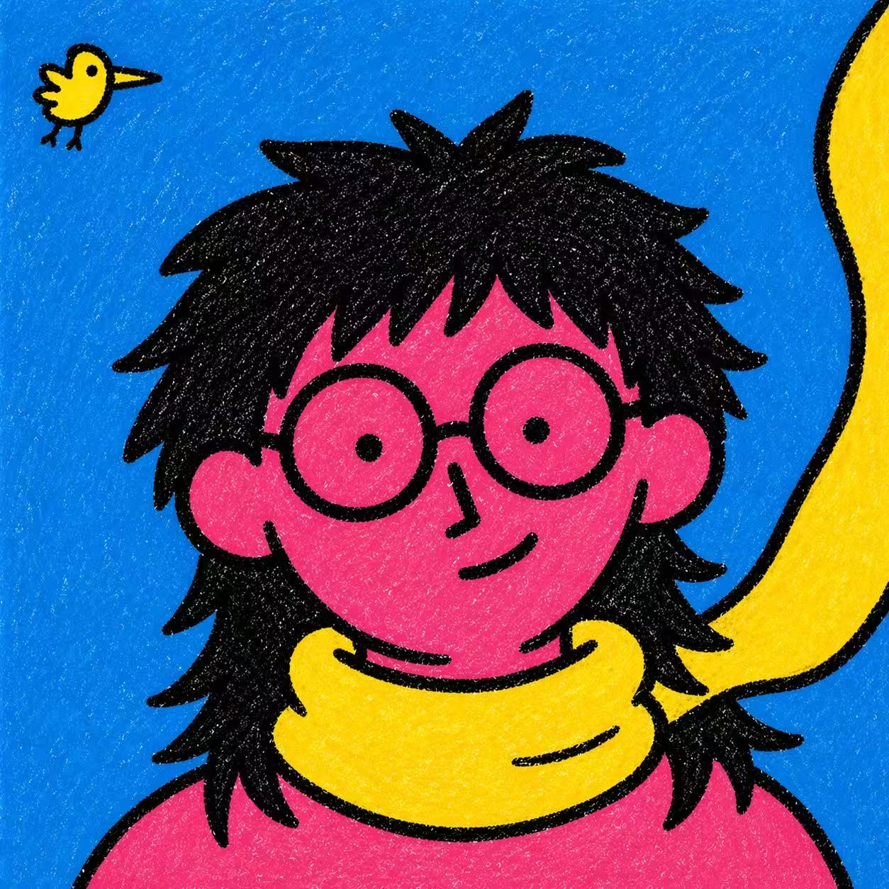

AI Visual Prompt Cookbook
Reusable Visual Prompt Systems
Browse 48 reusable image prompt styles with previews, copy-ready prompts, and source JSON.

Curator
Vigo Zhao
Qwen Ambassador · Designer × AI Engineer · AI visual workflow builder
Latest drop
Featured Styles
Full library
All Styles
No matching styles.
About the curator
Designed and maintained by Vigo Zhao
This cookbook is a living collection of AI-native visual prompt systems: each style is distilled into structured JSON, paired with previews, and kept reusable across subjects, formats, and image workflows.